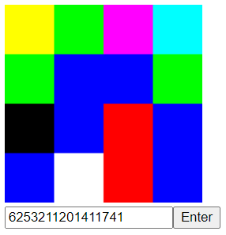

Useless NFT with blockchain written in C++
I am not a big fan of cryptocurrencies and NFTs. I think the hype surrounding them is somewhat disproportionate to the actual technology behind it. I also think that the energy requirements for it are completely ridiculous, and seeing that we are in a climate crisis, the last thing we need right now is a network of computers wasting energy doing useless proof-of-work calculations whose collective power consumption rivals that of entire countries.
Unfortunately, the wider software development world does not agree with me and is heavily betting on crypto as being the future of computing in general. In response to this, I decided to make my own NFT and accompanying blockchain as kind of a joke to point out the uselessness of NFTs in particular.
I decided that if I was going to do a useless project, then I may as well learn something from it, so I decided to do the project entirely in C++ and make it object-oriented. I did this because while I have quite a bit of experience writing C and C++ for low-level firmware stuff, and Python or Java for high-level OOP applications, I didn't have much experience writing C++ in an object-oriented way for higher-level software applications. Also, I am currently applying to internships, and a lot of hardware-oriented ones require C++ object-oriented programming skills, so I thought it would be a good idea to practice it.
I had a basic understanding of what a blockchain was, but I didn't know anything about the low-level implementation of a blockchain, so I followed this video from the YouTube channel FireShip on making a toy cryptocurrency, but I added some support for NFTs and I of course wrote it in C++ instead of TypeScript.
I would say the most difficult part of this project was the encryption, decryption, and hashing for transaction verification. This is mainly because these are generally tasks that would be performed by an external library, and I haven't had good luck using external libraries in C++ (as an aside, this is in my opinion one of the biggest weaknesses of C++ compared to more modern languages like Python or Rust, because those languages make it really easy to download and use an external library, and therefore make it easier to experiment quickly). I tried downloading Crypto++, which is a popular C++ library for this specific application, but I couldn't get it to work. Instead, I found that I could use OpenSSL, which was already installed on my Linux distribution, for hashing and RSA encryption/decryption, and there was a decent amount of code easily available on the internet for me to reference.
I also had to decide what my NFT would be. I learned that most modern NFTs are stored on the InterPlanetary File System with a link to that file on the actual Ethereum blockchain, but I thought that would have been a bit overkill for this project. Instead, I created a system where the NFT was stored as a 16-digit octal number, with each number corresponding to a colour. I wrote a simple JavaScript program to go through the number sequence and map each octal digit to a square on a 4x4 grid, where the square would be filled in with the colour corresponding to the number. This basically results in the NFT being a 4x4 image of random colours.

Since this is only a simplistic implementation, it has a number of limitations. For one thing, it doesn't support the decentralized aspect of crypto at all. I may add this in the future, but for such a simplistic implementation, that might be a little unnecessary. Another issue is that full RSA objects containing public and private keys are passed around, instead of having the public keys being the only thing that is passed around. This is not cryptographically secure and would be a complete disaster on production-level software. A potential solution is to have one RSA object for each public key and one object for each private key, but I need to learn more about OpenSSL to be able to do that. It also has some security concerns, like using unsafe string processing functions. I have been thinking of writing some kind of interface to allow you to mint and transfer your NFTs on this blockchain and hosting the program on a webserver, but I would have to do a lot more work to the project to get it to that stage.
Overall, I'm happy with how this project turned out. It started out as a joke, but it ended up teaching me a lot about C++ and OpenSSL. If you want to view the code, it is hosted on a GitHub repository here.